5530B52 Battery DRIP TRAY/SUPPORT - R.R.
- Path
- Procedures > 55 ELECTRICAL EQUIPMENT > 5530 CURRENT GENERATOR > 5530B battery and leads > 5530B52 Battery DRIP TRAY/SUPPORT - R.R.
- Kind
- repair procedure (removal / refitting; the operation number is the code)
- Applies to
- all engines; all production periods
- Interactive page
- https://sloeber94.github.io/elrnDB-a147/en/#/3025540
Applies to: engines: 1.6 TS, 2.0 TS; all production periods
 Removing
Removing
 Refitting
RefittingProceed with removal 5530B10 battery - r+r .
1. Remove the relay/fuse box cover.
2. Undo the nut (2a) and disconnect the earth lead (2b) from the relay-fuse box.
 | Name | Connector |
|---|---|---|
2b | Engine compartment junction unit |
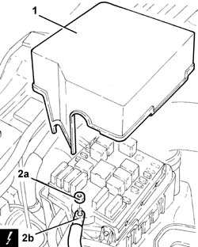
Applies to: engines: 1.6 TS, 2.0 TS; all production periods
1. Turn the relay-fuse box upwards.
2. Disconnect the electrical connections (2a), (2b), (2c), (2d) and (2e) from the relay-fuse box.
| Name | Connector |
|---|---|---|
2a | Engine compartment junction unit |
| Name | Connector |
|---|---|---|
2b | Engine compartment junction unit |
| Name | Connector |
|---|---|---|
2c | Engine compartment junction unit |
| Name | Connector |
|---|---|---|
2d | Engine compartment junction unit |
| Name | Connector |
|---|---|---|
2e | Engine compartment junction unit |
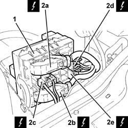
Applies to: engines: 1.6 TS, 2.0 TS; all production periods
1. Release the relay-fuse box from the hinges and remove it.
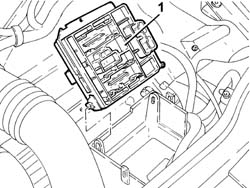
Applies to: engines: 1.6 TS, 2.0 TS; all production periods
1. Undo the nut (1a) and disconnect the earth lead (1b) from the battery terminal (-).
| Name | Connector |
|---|---|---|
1b | Battery |
2. Lift up the wiring protection (2a), as necessary, then release the earth lead (2b), disconnected previously, from the relay-fuse box casing.
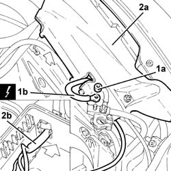
Applies to: engines: 1.6 TS, 2.0 TS; all production periods
1. Undo the nut (1a) and remove the relay-fuse box casing (1b).
2. Undo the nuts (2a) and remove the relay-fuse box support (2b).
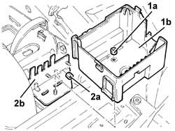
Applies to: engines: 1.6 TS, 2.0 TS; all production periods
Release the electrical wiring from the fastenings on the battery drip tray.
1. Undo the nut fixing the air filter to the battery drip tray.
2. Undo the bolts securing the battery cradle to the body.
3. Remove the battery cage.
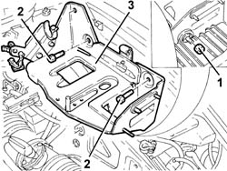
Applies to: engines: 1.6 TS, 2.0 TS; all production periods
Refitting
RemovingPlace the battery drip tray back in its housing and secure it to the bodyshell using the bolts.
Tighten the nuts fixing the air filter to the battery drip tray.
Secure the electrical wiring using the bands on the battery drip tray.
Place the relay-fuse box mounting back in its housing and secure it using the nuts.
Place the casing for the relay-fuse box back in its housing and secure it using the nut.
Place the earth lead in its housing through the opening in the relay-fuse box casing and connect it to the battery terminal (-).
Place the relay-fuse box back in its housing and secure it to the hinges.
Connect the electrical connections to the relay-fuse box.
Rotate the relay-fuse box in its housing.
Connect the earth lead to the relay-fuse box.
Place the relay/fuse box cover back in its housing.
Proceed with refitting 5530B10 battery - r+r .
Applies to: engines: 1.9 JTD 8V; all production periods
Removing
RefittingProceed with removal 5530B10 battery - r+r .
1. Remove the relay/fuse box cover.
2. Undo the nut (2a) and disconnect the earth lead (2b) from the relay-fuse box.
| Name | Connector |
|---|---|---|
2b | Engine compartment junction unit |
Applies to: engines: 1.9 JTD 8V; all production periods
1. Turn the relay-fuse box upwards.
2. Disconnect the electrical connections (2a), (2b), (2c), (2d) and (2e) from the relay-fuse box.
| Name | Connector |
|---|---|---|
2a | Engine compartment junction unit |
| Name | Connector |
|---|---|---|
2b | Engine compartment junction unit |
| Name | Connector |
|---|---|---|
2c | Engine compartment junction unit |
| Name | Connector |
|---|---|---|
2d | Engine compartment junction unit |
| Name | Connector |
|---|---|---|
2e | Engine compartment junction unit |
Applies to: engines: 1.9 JTD 8V; all production periods
1. Release the relay-fuse box from the hinges and remove it.
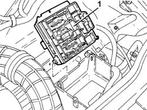
Applies to: engines: 1.9 JTD 8V; all production periods
1. Undo the nut (1a) and disconnect the earth lead (1b) from the battery terminal (-).
| Name | Connector |
|---|---|---|
1b | Battery |
2. Lift up the wiring protection (2a), as necessary, then release the earth lead (2b), disconnected previously, from the relay-fuse box casing.
Applies to: engines: 1.9 JTD 8V; all production periods
1. Undo the nut (1a) and remove the relay-fuse box casing (1b).
2. Undo the nuts (2a) and remove the relay-fuse box support (2b).
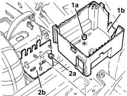
Applies to: engines: 1.9 JTD 8V; all production periods
Release the electrical wiring from the fastenings on the battery drip tray.
1. Undo the nut fixing the air filter to the battery drip tray.
2. Undo the bolts securing the battery cradle to the body.
3. Remove the battery cage.
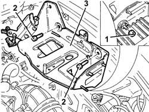
Applies to: engines: 1.9 JTD 8V; all production periods
Refitting
RemovingPlace the battery drip tray back in its housing and secure it to the bodyshell using the bolts.
Tighten the nuts fixing the air filter to the battery drip tray.
Secure the electrical wiring using the bands on the battery drip tray.
Place the relay-fuse box mounting back in its housing and secure it using the nuts.
Place the casing for the relay-fuse box back in its housing and secure it using the nut.
Place the earth lead in its housing through the opening in the relay-fuse box casing and connect it to the battery terminal (-).
Place the relay-fuse box back in its housing and secure it to the hinges.
Connect the electrical connections to the relay-fuse box.
Rotate the relay-fuse box in its housing.
Connect the earth lead to the relay-fuse box.
Place the relay/fuse box cover back in its housing.
Proceed with refitting 5530B10 battery - r+r .
Applies to: engines: 1.9 JTD 16V; all production periods
Removing
RefittingProceed with removal 5530B10 battery - r+r .
1. Remove the cover for the junction unit in the engine compartment.
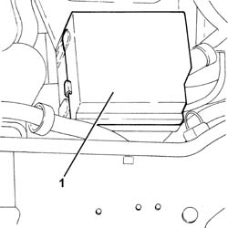
Applies to: engines: 1.9 JTD 16V; all production periods
1. Rotate the engine compartment junction unit.
2. Disconnect the electrical connection from the engine compartment junction unit.
| Name | Connector |
|---|---|---|
2 | Engine compartment junction unit |
Release the engine compartment junction unit from the hinges and move it to the side.
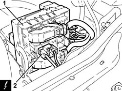
Applies to: engines: 1.9 JTD 16V; all production periods
1. Remove the plug (1a), undo the nut (1b) and remove the engine compartment junction unit casing (1c) to the side.
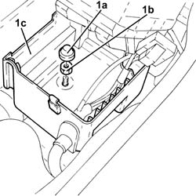
Applies to: engines: 1.9 JTD 16V; all production periods
1. Undo the nuts (1a) and remove the engine compartment junction unit casing support (1b).
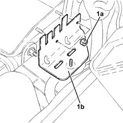
Applies to: engines: 1.9 JTD 16V; all production periods
1. Undo the nut fixing the air filter to the battery drip tray.
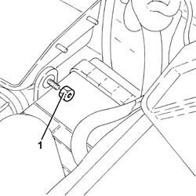
Applies to: engines: 1.9 JTD 16V; all production periods
Release the electrical wiring from the fastenings on the battery drip tray.
1. Undo the bolts (1a), slacken the bolt (1b) and remove the battery drip tray (1c).
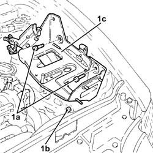
Applies to: engines: 1.9 JTD 16V; all production periods
Refitting
RemovingRefit the battery cage in its seating and fix it with its bolts.
Secure the electrical wiring to the fastenings ont the battery drip tray.
Tighten the nuts fixing the air filter to the battery drip tray.
Place the engine compartment junction unit casing mounting in its housing and secure it using the nuts.
Place the engine compartment junction unit casing in its housing and fasten it using the nut.
Place the plug back in position.
Place the engine compartment junction unit in its housing securing it to the hinges.
Connect the electrical connection to the engine compartment junction unit and rotate it in its housing.
Place the engine compartment junction unit cover in position.
Proceed with refitting 5530B10 battery - r+r .
Applies to: engines: 3.2 V6; all production periods
Removing
RefittingProceed with removal 5530B10 battery - r+r .
1. Undo the bolts (1a) and move the relays (1b) away from the battery drip tray.
2. Undo the nut fixing the air filter to the battery drip tray.
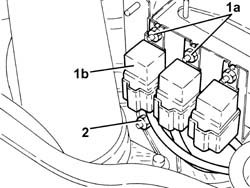
Applies to: engines: 3.2 V6; all production periods
1. Undo the bolts (1a), slacken the bolt (1b) and remove the battery drip tray (1c).
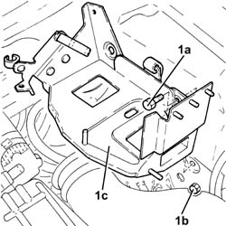
Applies to: engines: 3.2 V6; all production periods
Refitting
RemovingRefit the battery cage in its seating and fix it with its bolts.
Tighten the nuts fixing the air filter to the battery drip tray.
Replace the relays in their seats on the battery case and secure with nuts.
Proceed with refitting 5530B10 battery - r+r .
Topics linked from this page (8)
- 5530B10 battery - r+r
- A1B Battery ( Connectors )
- B1A Engine compartment junction unit ( Connectors )
- B1B Engine compartment junction unit ( Connectors )
- B1C Engine compartment junction unit ( Connectors )
- B1D Engine compartment junction unit ( Connectors )
- B1E Engine compartment junction unit ( Connectors )
- B1X Engine compartment junction unit ( Connectors )
Topics that link to this page (71)
- 0010T62 BRAKE and/or CLUTCH FLUID - Replace. fluid - Includes. washing pipes and bleeding air
- 0010T67 hydraulic clutch system bleed air
- 1004B10 power unit with manual gearbox - r + r
- 1004B24 power unit with manual gearbox with hydraulic selection - r r
- 1016D20 left cylinder head - r + r and replace gasket
- 1020D26 flywheel side oil seal cover - r+r
- 1020D36 flywheel end oil seal - replace for manual gearbox with hydraulic selection versions
- 1020D38 flywheel side oil seal - replace
- 1020D51 crank shaft rear mount - apply silicone to mating surfaces
- 1024B10 engine flywheel - r + r for versions with manual gearbox
- 1024B11 engine flywheel - r r for manual gearbox with hydraulic selection versions
- 1048A10 air cleaner filtering element - replace
- 1048A14 air cleaner filtering element - replace.
- 1048a52 air inlet pipe to turbo charger - r + r
- 1048a54 sleeve to turbocharger - r r
- 1060G10 flow meter - r r
- 1064A28 SOLENOID VALVE FOR TURBOCHARGER VANE ACTUATOR - R.R.
- 1072B10 inlet manifold - r + r and replace seal
- 1080C80 exhaust gas water heat exchanger for egr valve r r
- 1088B20 engine cooling radiator - r + r
- 1088C30 thermostat unit - r+r
- 1088C40 thermostat- r + r
- 1088D24 rigid pipe for coolant inlet to water pump - r + r
- 1088E10 radiator cooling fan - r + r
- 1810A20 clutch - r + r
- 1810A28 clutch - r r for manual gearbox with hydraulic selection versions
- 1820A24 thrust bearing linkage - r + r
- 1820B20 (Pump) - MASTER CYLINDER R.R.
- 1820B30 OPERATING CYLINDER/CLUTCH HYDRAULIC ACTUATOR - R.R.
- 1820B40 FLEXIBLE PIPE from clutch reservoir to (pump) - master cylinder R.R.
- 1820B54 hose from damper - r r
- 1820B58 clutch hydraulic circuit vibration damper - r+r
- 2110A10 manual gearbox and differential - r + r
- 2110A11 manual gearbox with differential - r r for versions with hydraulic selection
- 2110C22 gear input shaft seals - r r
- 2110C24 seals for gearbox input shaft - r r for manual gearbox with hydraulic selection versions
- 2110C50 gear selection and engagement unit - r r
- 2125C70 gearbox/brake lever mount - r r
- 2127C20 pipe frompump to hydraulic speed selection actuator unit - r r
- 2127C22 pipe from hydraulic speed selection actuator unit to fluid reservoir - r r
- 2127C25 PIPE FROM SELECTION SOLENOID VALVE TO ENGAGEMENT/SELECTION ACTUATOR - R.R.
- 2127C26 PIPE FROM ODD GEARS ENGAGEMENT SOLENOID VALVE TO SELECTOR/ENGAGEMENT ACTUATOR - R.R.
- 2127C27 PIPE FROM GEAR ENGAGEMENT SOLENOID VALVE TO ENGAGEMENT/SELECTOR ACTUATOR - R.R.
- 2127C28 PIPE FROM CLUTCH ENGAGEMENT SOLENOID VALVE TO CLUTCH HYDRAULIC ACTUATOR - R.R.
- 2127C40 hydraulic speed selection hydraulic actuator unit and clutch - r r
- 2127C44 pressure accumulator on hydraulic actuator unit - r r
- 2127C45 CLUTCH OPERATING CYLINDER, of electrohydraulic selection - R.R .
- 2127C48 GEAR ENGAGEMENT ELECTRO-HYDRAULIC SELECTION DEVICE - R.R.
- 2127C52 EVEN AND UNEVEN GEAR ENGAGEMENT SOLENOID VALVES - R.R.
- 2127C56 CLUTCH SOLENOID VALVE - R.R.
- 2127E40 hydraulic selection gearbox speed selection position sensor - r r
- 2127E42 hydraulic selection gearbox shift position sensor - r r
- 2127E44 hydraulic selection gearbox clutch position sensor - r r
- 2127E52 hydraulic selection gearbox input shaft speed sensor - r r
- 2127E94 wiring for manual gearbox hydraulic selection system on hydraulic selection unit r r or change
- 3330D02 brake servo/brake pump assembly - r r
- 3340A12 A'B.S. system. - electronic and hydraulic CONTROL UNIT R.R.
- 3340A13 abs central mount - r r
- 3340A20 abs electronic control unit - r+r
- 3340B55 central brake pipe to lh - r r
- 3340B56 RIGID PIPE from hydraulic CONTROL UNIT to RIGHT FRONT BRAKE - R.R.
- 3340B62 rear connection central pipe - r r
- 3350A30 asr to control unit - r r
- 4130A10 power steering box - r+r - check tow-in if necessary separately - includes bleeding
- 4130B40 outlet pipe from pump to power steering case r r
- 4130B49 return pipe from power steering case to heat exchanger pipe r r
- 4130B70 INTERMEDIATE return PIPE between POWER ASSISTED STEERING BOX and HEAT EXCHANGER/power assisted steering fluid COOLING RADIATOR - R.R.
- 4130B72 Return PIPE from POWER ASSISTED STEERING BOX to INTERMEDIATE PIPE - R.R.
- 4130B82 return pipe between rigid intermediate return pipe to fluid resevior r r
- 5510C46 flywheel side knock sensor - r+r
- 5510C48 timing side knock sensor - r+r